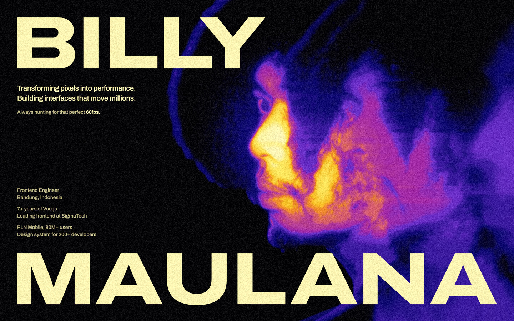
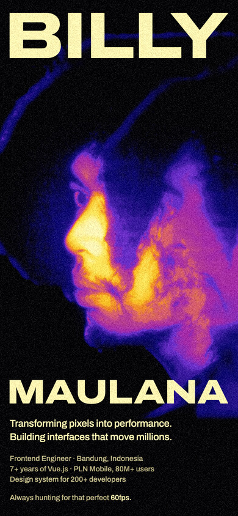
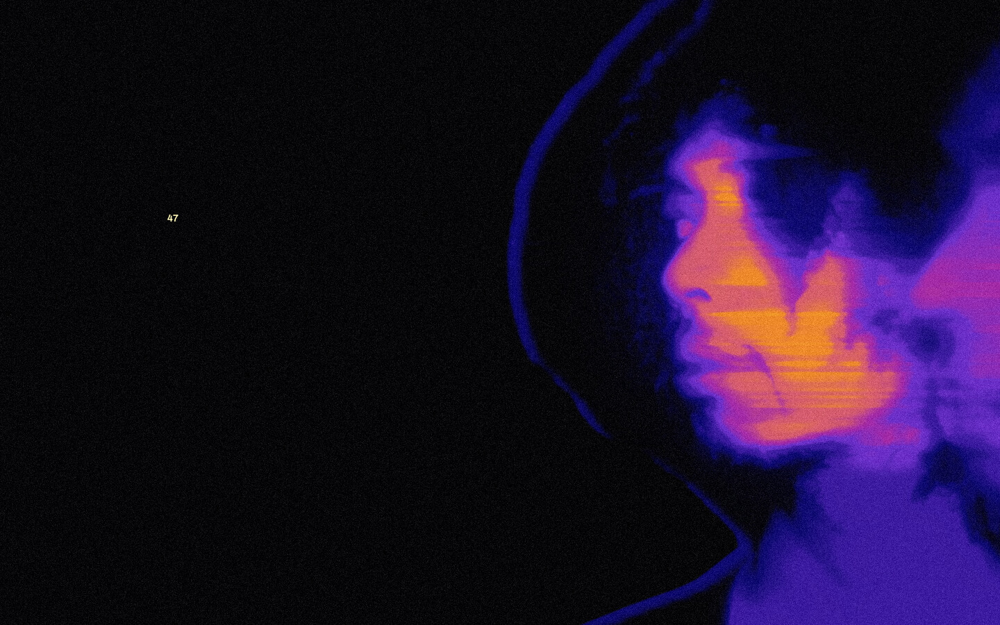
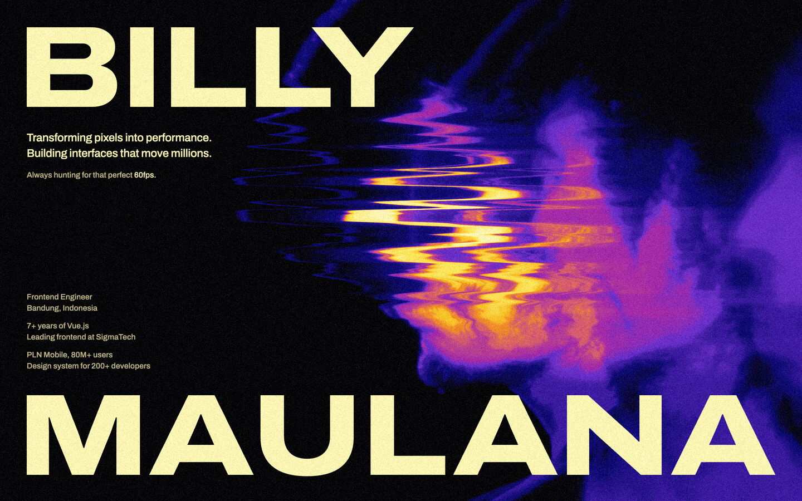
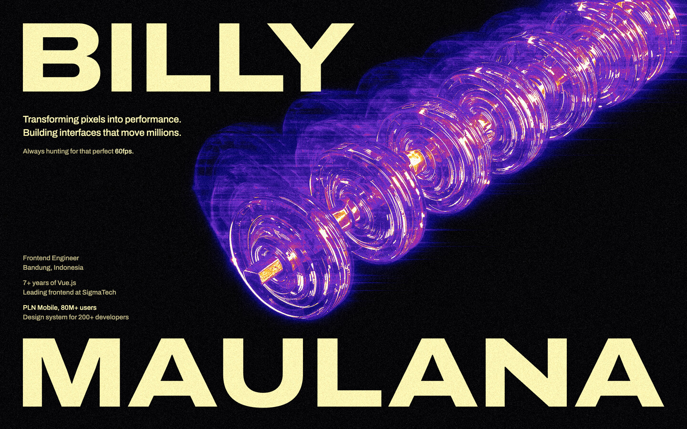

a
Billy dipotret dengan rana kedua: tiga fotonya menjadi tiga eksposur satu tolehan yang terekam sebagai jejak panas, dan yang terakhir beku paling tajam dan paling panas tepat saat penghitung mencapai 60fps.








b
Tanpa sosok: serangkaian isolator kaca tegangan tinggi, benda dari jaringan listrik di balik PLN Mobile, menahan panas di antara dua kata nama Billy.


Arah b baru punya satu frame; splash dan ponsel dibuat bila arah ini dipilih.